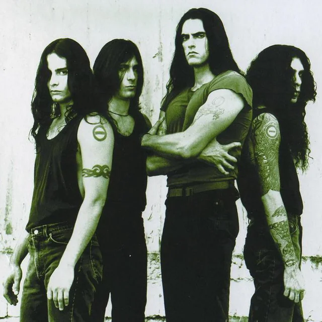
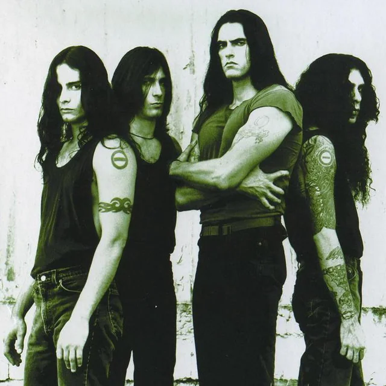

.webp) 


Nirvana
Nirvana is mijn favoriete grunge band. De zanger en gitarist, Kurt Cobain, had een hele unieke stem. Hij is op 27-jarige leeftijd overleden. De rest van de band, Kris Novoselic (basgitaar) en Dave Grohl (drummer) is sindsdien uit elkaar. De band heeft erg veel goede liedjes uitgebracht, zoals hun bekendste hits: Smells like teen spirit, Come as you are en Heart-shaped box.
Type O Negative
Type O Negative is een metal band, specifiek, gothic metal. De band is opgericht in 1989. Met leadzanger en basgitarist Peter Steele is het een erg unieke band. Peter Steele is overleden op 48-jarige leeftijd op 14 april 2010 en sindsdien is de band uiteengevallen. De rest van de leden zijn: Kenny Hickey (background vocals/leadgitarist), Josh Silver (toetsenist) en Johnny Kelly (drummer).
Metallica
Metallica is een thrash metal band die is opgericht in 1981 door drummer Lars Ulrich. De andere leden zijn: Kirk Hammett (leadgitarist), James Hetfield (rhytmisch gitarist, vocalist) en Cliff Burton (basgitarist). Dit zijn de originele leden, nu is de basgitarist Robert Trujillo omdat Cliff Burton is omgekomen in een tragisch ongeluk met de tourbus van de band. Deze band is een van de meest succesvolle metal bands, naast Black Sabbath. Met hits zoals: Enter sandman, Nothing else matters en Master of puppets zijn ze erg populair. Dit is mijn all-time favorite band als het gaat om metalmuziek.